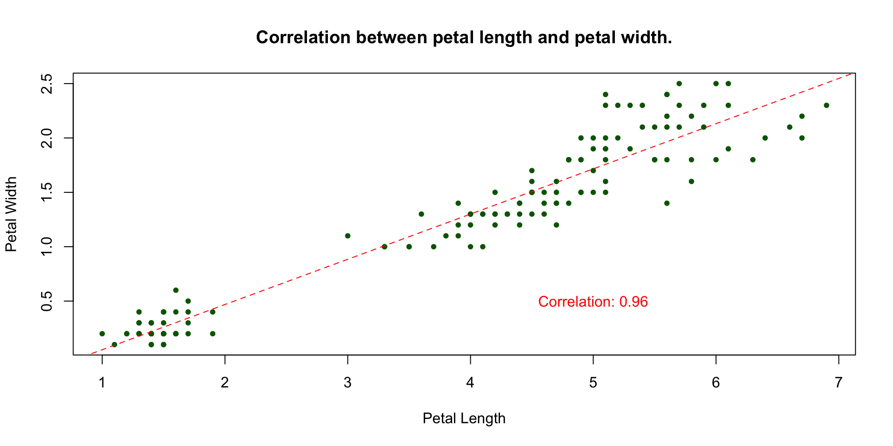
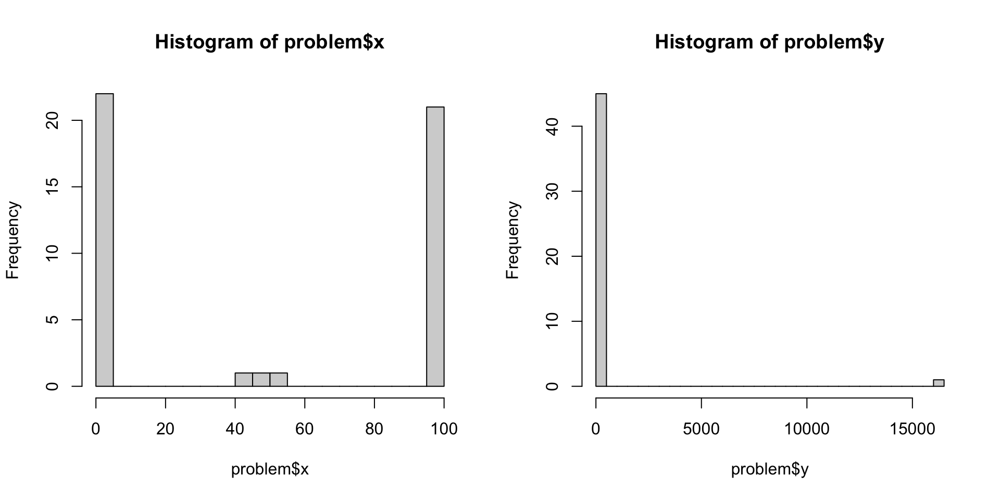
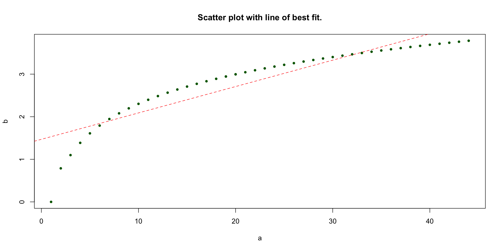
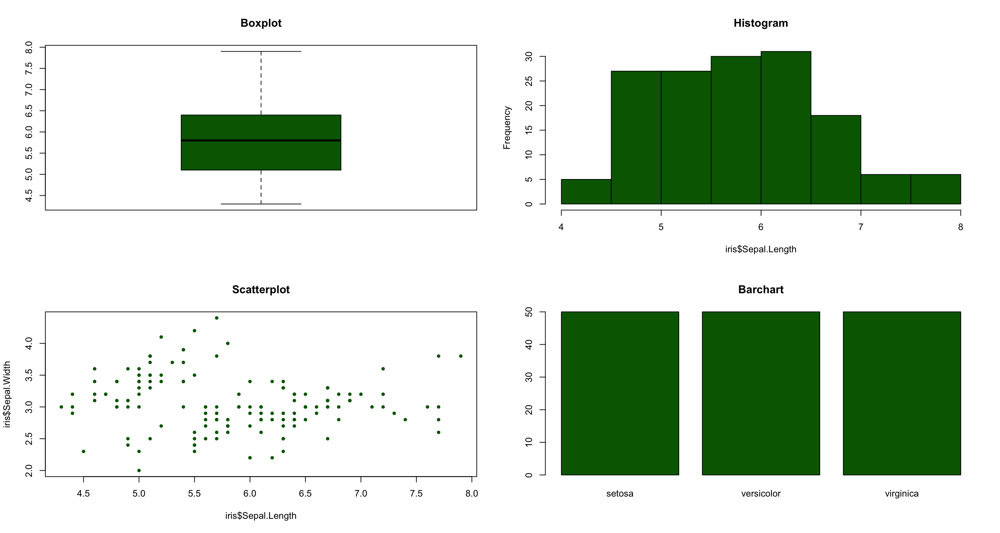
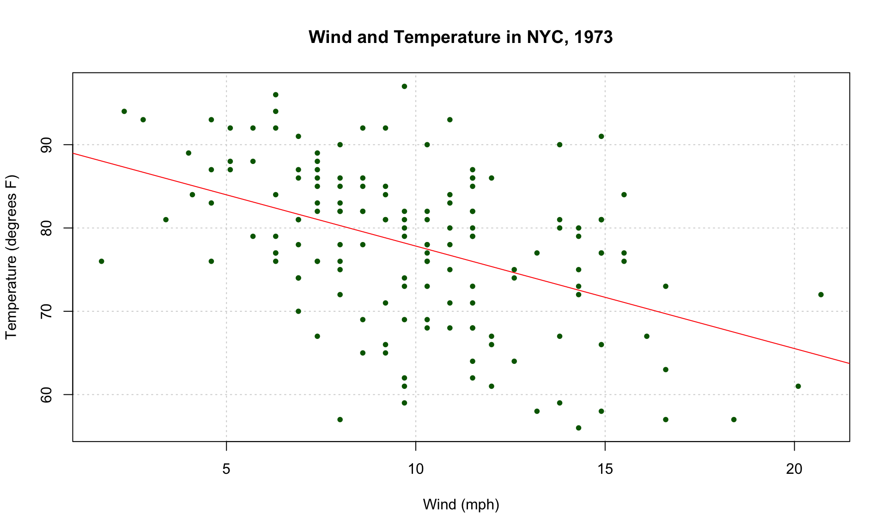
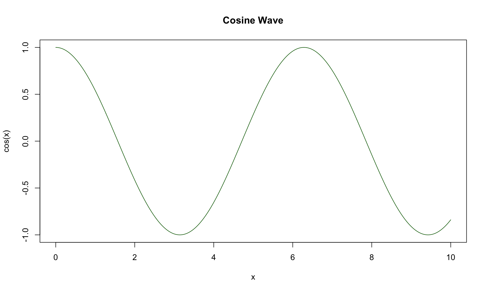
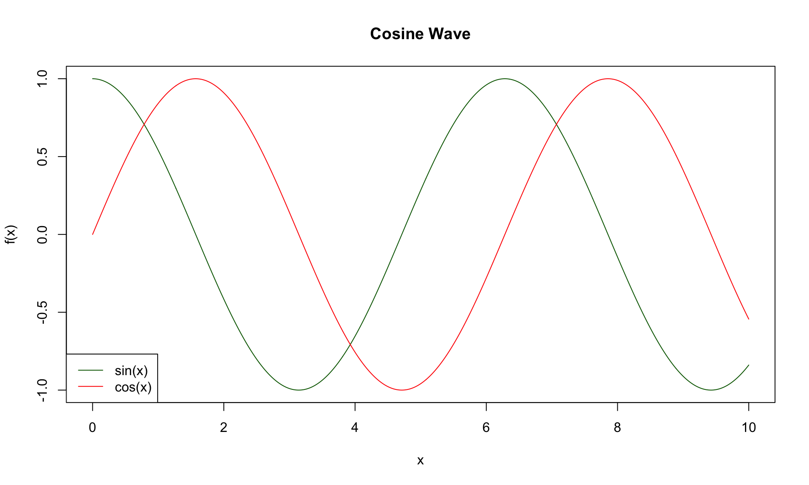
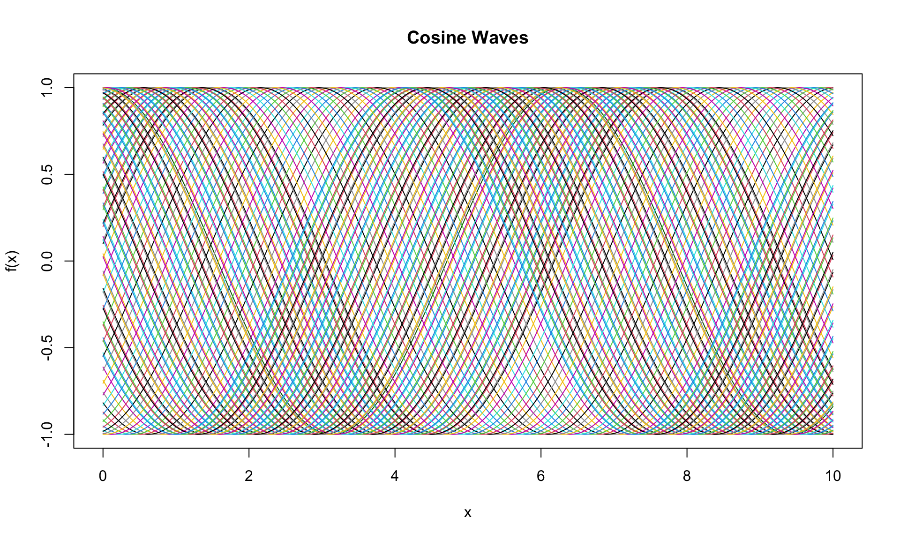
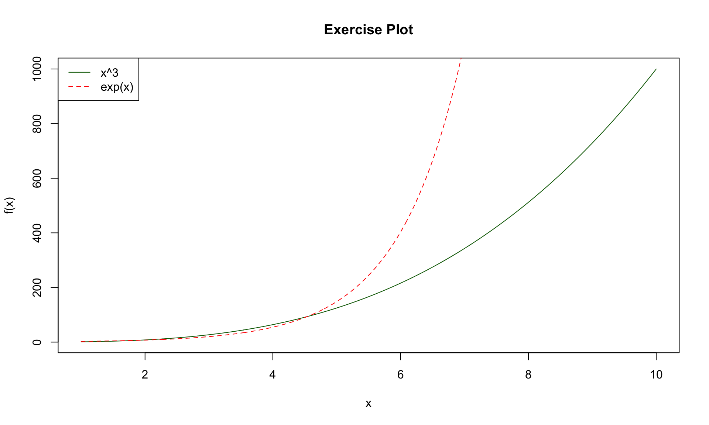

![]()
ds12 ds13 ds14 ds15 ds16
1 850 740 900 1070 930
2 850 950 980 980 880
3 1000 980 930 650 760PSTAT 10 Data Science Principles
Lecture 8: Plotting
August 30, 2026
Introduction
🔁 Review: Lecture 7
👈 Last lecture we studied the following topics:
- Tibble Objects;
- Tibble Manipulation;
- Selecting;
- Filtering;
- Mutating;
- Reading Data
.txt;.csv; and.xlsx.
👀 Outline: Lecture 8
👇 Today we will continue looking at describing and visualizing external data, specifically:
- Descriptive statistics
- Base R Plotting
- Probability
- Discrete and Continuous Random Variables
Exploring Real Data
📄 .csv Files
File Types Recap
Last lecture we looked at several different file types that data can be stored as, including:
.txtfiles.csvfiles.xlsxfiles
Why .csv?
In this course we shall be using .csv files almost exclusively, and so we typically will only need the read.csv() function to load real world data.
Loading Michelson.csv
The Michelson data is a famous dataset measuring the speed of light. I keep my data in a data subfolder, hence the path name below.
🌪️ Messy Data Problems
The Reality of Real Data
Real data is rarely clean and well behaved. It is often messy and unintuitive, and it is our job as data scientists and statisticians to understand, interpret and draw meaning from the mess.
Key Tools
To accomplish this goal we begin with several key tools:
- Summary Statistics
- Graphical Tools
- Statistical Measures (Correlation, Standard Deviation)
- Prior Knowledge
- Qualitative Analysis (understanding where the data comes from)
📖 Statistics Terminology
Population & Sample
Data consists of information from observations, counts, measurements or responses.
- The population is the complete collection of all observations.
- The sample is a representative group selected from a population.
Parameters & Statistics
- A parameter describes a population characteristic; a statistic describes a sample characteristic.
- Descriptive statistics summarize data.
- Inferential statistics test hypotheses (PSTAT 126).
📊 Summary Statistics
Summary statistics are the key statistics of a sample that we always generate to get an idea about the shape and location of the data.
Key Statistics
- Minimum
- Lower Quartile
- Median
- Mean
- Upper Quartile
- Maximum
- Spread Measures (Standard Deviation, Variance)
- Outliers
- Variable Correlation
💪 Exercise — Summary Statistics
02:00
The summary() function provides the first 6 statistics. The correlation and standard deviation are given by the cor() and sd() functions respectively.
- Change the
Michelsonobject to a tibble using the functiontibble(). - Select the column
ds16using theselect()function and apply the functionsummary().
✅ Solution — Summary Statistics
- Convert
Michelsonto a tibble usingtibble(). - Select the
ds16column usingselect(). - Apply
summary()to obtain the key summary statistics.
📦 Boxplots
📈 Descriptive Statistics
Descriptive statistics help to summarize key characteristics of the data such as:
- its location
- its spread
- if its distribution has one peak (unimodal) or many peaks
- how sharp these peaks are (kurtosis)
- whether the data is skewed one way or the other
📌 In this course we only consider location and spread.
⚖️ Measures of Centrality & Spread
Measures of Centrality
- Arithmetic average or mean — use the function
mean() - Data midpoint, a.k.a. the median — use the function
median() - Most frequent value, a.k.a. the mode — use the function
mode()
Measures of Spread
- Range (difference between maximum and minimum) — use the function
range() - Interquartile Range (difference between upper and lower quartile)
- Variance and Standard Deviation — use the functions
var()andsd()
🧮 Sample Mean & Standard Deviation
Sample Mean
The sample mean is just the arithmetic average. For a sample \((x_1, ..., x_n)\) the sample mean \(\bar{x}\) is given by
\[ \bar{x} = \frac{1}{n}\sum_{i=1}^nx_i=\frac{x_1 +x_2 + \cdots + x_n}{n} \]
📌 This is only an estimate of the (true) population mean, which we denote \(\mu\).
Sample Standard Deviation
The sample standard deviation \(s\) is:
\[ s = \sqrt{\frac{1}{n-1}\sum_{i=1}^n(x_i-\bar{x})^2} \]
📌 This estimates the (true) population standard deviation \(\sigma\) (recall \(\sigma^2\) is the variance).
🔗 Relation Measures
📌 Relation measures describe how two variables change together — i.e. how does one variable change if we change the value of another?
Intuition
- Both increase together → positive relationship (e.g. height & weight).
- One increases as the other decreases → negative relationship (e.g. price & demand).
- No consistent pattern → unrelated (e.g. shoe size & IQ).
📈 Example — Correlation Plot

🧮 Covariance & Correlation
Covariance
The covariance between two variables \(x:= (x_1, ..., x_n)\) and \(y:= (y_1, ..., y_n)\) is given by
\[ \text{Cov}(x,y)=\frac{1}{n-1}\sum_{i=1}^n (x_i - \bar{x})(y_i-\bar{y}) \]
📌 The covariance can be negative, which indicates a negative linear relationship (one goes up means the other goes down).
Correlation
From the definition of covariance we naturally define correlation, denoted by the Greek letter rho \(\rho\), of two variables \(x\) and \(y\) as
\[ \rho_{XY} = \frac{\text{Cov}(x,y)}{s_x \cdot s_y} \]
We can compute the correlation between two vectors in R using the function cor().
💪 Exercise — Computing Summary Statistics
05:00
We shall be considering the faithful.csv dataset, which contains a list of waiting times between eruptions and the duration of eruptions for the Old Faithful geyser in Yellowstone National Park.
- Download the data from Canvas and save it to your working directory.
- Load the data into R and save it to the object
faithful. Convert this to atibble()object. - Using the functions
mean()andsd(), compute the mean oferuptionsand the standard deviation ofwaiting. - Use the functions
cov()andcor()to compute both the covariance and the correlation betweeneruptionsandwaiting.
✅ Solution — Computing Summary Statistics
- Load
faithful.csvand convert it to a tibble. - Compute the mean of
eruptionsand the standard deviation ofwaitingusingmean()andsd(). - Compute the covariance and correlation between
eruptionsandwaitingusingcov()andcor().
[1] 3.487783[1] 13.59497[1] 13.97781[1] 0.9008112⚠️ Problems with Descriptive Statistics
The Problem
It is very important to practice caution when using summary and descriptive statistics. They are very simplistic and are easily fooled by more complex data patterns.
Example Data
To demonstrate some of the problems you may run into we consider problem.csv, which can be found on Canvas.
⚠️ Interpreting the Summary
Applying summary() to problem we obtain the following summary statistics:
x y a b
Min. : 0.00 Min. : 41.0 Min. : 1.00 Min. :0.000
1st Qu.: 2.25 1st Qu.: 49.0 1st Qu.:12.25 1st Qu.:2.505
Median : 46.50 Median : 50.5 Median :21.50 Median :3.068
Mean : 48.87 Mean : 405.3 Mean :22.37 Mean :2.855
3rd Qu.: 97.75 3rd Qu.: 53.0 3rd Qu.:32.75 3rd Qu.:3.489
Max. :100.00 Max. :16368.0 Max. :44.00 Max. :3.784 We might make the following quick observations:
- The variable
xis clustered around 48. - The variable
yis clustered around 405.
⚠️ A Closer Look — Histogram
A closer look at x and y:

⚠️ A Closer Look — Scatter Plot
The relationship between a and b does not appear to be linear!

Plotting in Base R
🖼️ Types of Plots
There are a wide variety of plots which all have their uses for data visualization and interpretation, including:
- Scatterplots
- Boxplots
- Histograms
- Barcharts
- Pie Charts
- Q-Q plots

Example Data
For an example we consider the airquality data in the datasets library.
😬 An “Unprofessional” Plot
🎨 A More Professional Plot
This is fine but not very professional. Fortunately, plot() has a lot of arguments we can use to tune our plot.
🎨 Further Improvements
What We Changed
- Defined a plot title using
main="..."; - Defined x and y axis labels using
xlab="..."andylab="..."; - Formatted our point type to be solid
pch=20and dark greencol="darkgreen".
Line of Best Fit
We also might want to overlay a line of best fit using the linear model lm() function.
We will not cover the lm() function in this course, but in summary it fits a linear regression model between the x and y variables and we use this model to plot the line of best fit.
We add this line to our plot using the function abline().
📉 Line of Best Fit
📉 Line of Best Fit

📐 Formula Notation
Notice in lm() we used R’s formula notation y ~ x. It is recommended to use formula notation for your plots as it makes your code clearer.
Key Syntax
y ~ xreads as “y modeled by x” — the response goes on the left of~, predictors go on the right.- The
data = ...argument lets you refer to columns by name directly, without repeatingdataframe$in front of every variable. - Multiple predictors can be combined with
+, e.g.y ~ x1 + x2.
📐 Formula Notation
〰️ Plotting Continuous Functions
Discretizing
- Computers think in discrete terms and cannot represent continuous time.
- To plot continuous functions, e.g.
sin()orexp(), we discretize them — redefining the interval as a sequence with very fine discrete jumps. - For example, on the interval \([0,10]\) we could define:
Cosine Wave Example
- We compute
cos(x)and specifytype="l", which plots a smooth line between the points rather than the points themselves.
〰️ Plotting Continuous Functions

➕ Overlaying Lines
Using lines()
- We can overlay several lines one on top of the other using the
lines()function. lines()takes broadly the same arguments asplot()(e.g.col,type,lty).
Adding a Legend
- We add a legend using the function
legend(). - The first argument (e.g.
"bottomleft") sets the position of the legend. legend = c(...)gives the labels for each line.col = ...andlty = ...should match the plotted lines so the legend correctly identifies each one.
➕ Overlaying Lines

🔁 Iterating Function Plotting
For a bit of fun we conclude by demonstrating how a for loop can be used to iteratively produce complicated plots:
- We first plot the base cosine wave, then loop
ifrom 1 to 100. - Each iteration draws a phase-shifted sine wave
sin(x + i/10)usinglines(). - Setting
col = icycles through R’s default color palette, giving each new line a different color. - The result is a dense fan of overlapping waves, all built up from a single simple plotting call repeated inside the loop.
🔁 Iterating Function Plotting

💪 Exercise — Plotting in R
05:00
Produce plots for \(x^3\) and \(e^x\) for x between 1 and 10.
- Define your
xas a discretized sequence of values. - Define
x_cubedas \(x^3\) andexp_xas \(e^x\). - Construct a plot of
xagainstx_cubed, adjusting formatting as desired. - Add an additional line to the plot representing \(e^x\).
- Add an appropriate legend.
✅ Solution — Plotting in R
- Discretize
xbetween 1 and 10, then definex_cubedas \(x^3\) andx_expas \(e^x\). - Plot
xagainstx_cubedas a line, then overlayx_expusinglines(). - Add a legend identifying each line.
# define variables
x <- seq(1, 10, by = 0.01)
x_cubed <- x^3
x_exp <- exp(x)
# produce plot
plot(
x, x_cubed,
main = "Exercise Plot",
xlab = "x", ylab = "f(x)",
type = "l", col = "darkgreen"
)
lines(x, x_exp, col = "red", lty = 2)
legend(
"topleft",
legend = c("x^3", "exp(x)"),
col = c("darkgreen", "red"), lty = 1:2
)✅ Solution — Plotting in R

Summary
✅ Topics Covered
🤔 Today we looked into:
- Descriptive statistics
- Base R Plotting
📅 Next Class
🤩 Next class we will temporarily leave behind data science topics as we study probability theory! The next four classes will be (roughly) split as follows:
- Introduction to Probability
- Discrete Random Variables
- Continuous Random Variables
- Monte Carlo Methods